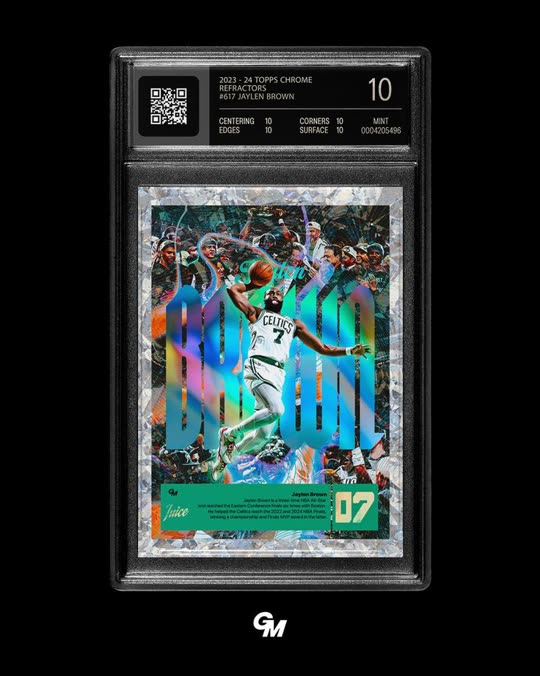
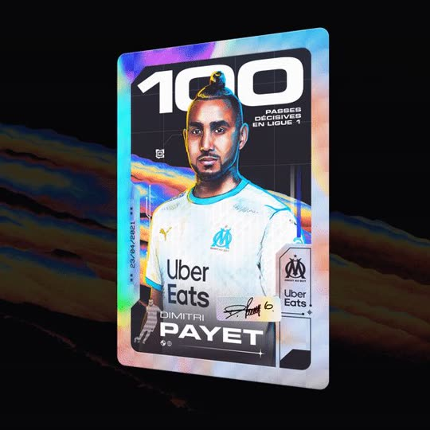
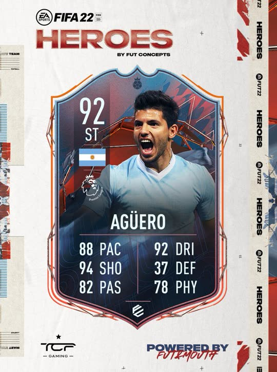
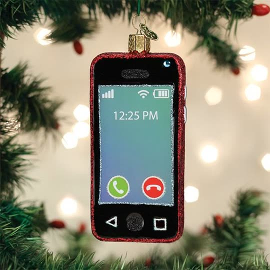
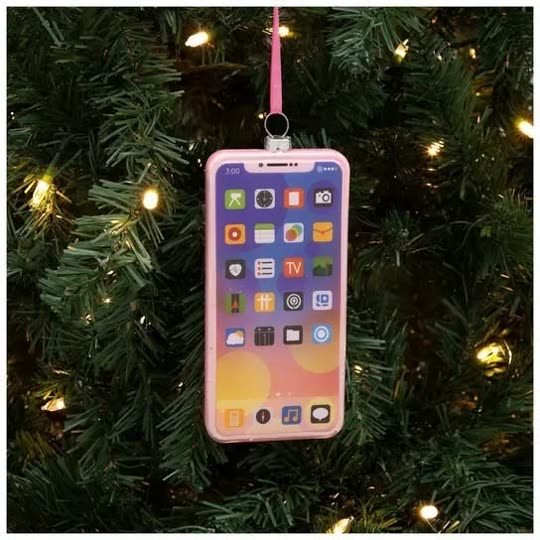
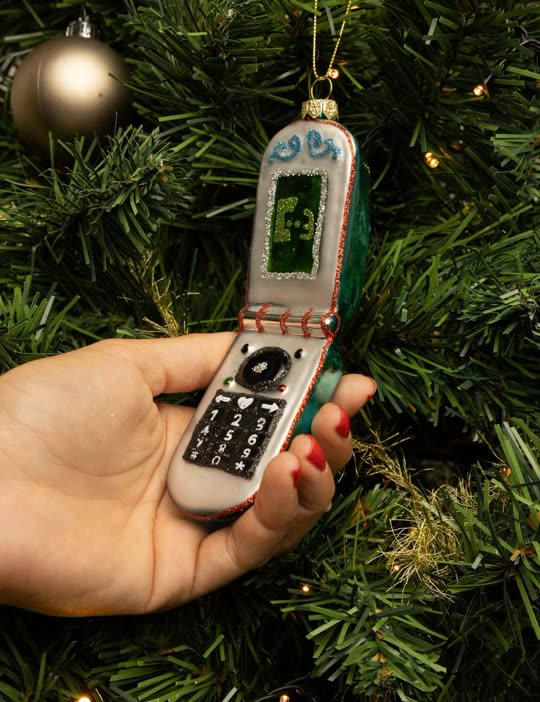

Cảnh
SC01_HookHình lạ có sản phẩm · 0–3,5 giây
SC02_WinnerThấy quảng cáo thắng · 3,5–7 giây
SC03_DropInĐưa vào Promer · 7–14 giây
SC04_YourAdBản của mình · 14–20 giây
SC05_MoreSpy · Clone · Launch · 20–25 giây
SC06_CTAKết cố định · 25–30 giây
Lời · chữ · tiếng
(chung A và B)
- Lời (Emma): "No idea for your next ad? You don't need one."
- Chữ: You don't need a new idea.
- Tiếng: tiếng chuông gió thuỷ tinh, nhạc nhỏ; đúng "one" có một nhịp im
- Lời: "Start from one that's already winning."
- Chữ: chỉ số quảng cáo thắng (số ngày chạy, số phiên bản, nền tảng, câu hook) + WINNING AD
- Tiếng: tick mỗi dòng chỉ số, impact lúc đóng dấu / chuông kính chạm bục
- Lời: "Drop it into Promer with your product photos. It reads the hook, the shots and the pacing, and checks your product fits."
- Chữ: No prompts · No models · No filming
- Tiếng: pop khi ảnh rơi vào ô, tick mỗi dòng xong
- Lời: "Then it rebuilds that ad around your product, scene by scene."
- Chữ: Proven formula. Your product.
- Tiếng: drop nhạc ở 14 giây, whoosh mỗi cảnh
- Lời: "Need more? Promer suggests winning ads for your product, ready to clone."
- Chữ: Spy · Clone · Launch
- Tiếng: click, swipe
- Lời: "Make your first winning ad today. Plans from nine dollars a month."
- Chữ: Try for Free ★ 4.8/5 Trusted by 150K+ ecommerce merchants promer.ai · Plans from $9/mo
- Tiếng: chime
Bản A
quả châu phản chiếu, thẻ sưu tầm
- Quảng cáo nằm trong quả châu. Khung 0: cận macro một quả châu thuỷ tinh vàng trên cây thông, chiếm gần hết khung. Mặt cong của nó phản chiếu một chiếc điện thoại đang phát quảng cáo Giáng sinh, cong theo mặt cầu.
- Chữ to đập vào đúng "You don't need one": You don't need a new idea.
- Máy: macro 100 mm, f/2.8, đèn cây nhoè tròn phía sau, đẩy thật chậm vào hình phản chiếu. Quả châu xoay nhẹ, quảng cáo trong đó chạy theo.
- Nối sang SC02: máy chui hẳn vào hình phản chiếu.
Pinterest: gold ornament reflection · hands holding ornament reflection · hand with mirror sphere. Lấy: hình phản chiếu cong trên mặt cầu, sản phẩm (quả châu) có mặt ngay khung 0.



- Quảng cáo thắng thành thẻ sưu tầm. Quảng cáo trong quả châu bay ra, đóng vào một thẻ holo trong hộp kính chấm điểm, ánh cầu vồng lướt qua.
- Mặt thẻ ghi chỉ số như thẻ cầu thủ, bật từng dòng theo phách: ACTIVE 94 DAYS 14 VERSIONS REELS · TIKTOK HOOK: "her first Christmas". Góc thẻ có điểm to kiểu "92".
- Lời Emma "already winning" rơi đúng lúc con dấu WINNING AD đóng lên hộp kính.
- Khác Ad03: Ad03 là cột chữ cạnh video; đây là một vật thể cầm được.
Pinterest: graded card slab · holo card · card with stats. Lấy: hộp kính chấm điểm, ánh holo, bảng chỉ số.
- Thẻ reel bay vào ô Reference video ad; 3 ảnh đồ trang trí (sứ trắng in ảnh, mica trong khắc ảnh, gỗ khắc tên) rơi vào ô Product images.
- Cột "How Video Clone works" tick từng dòng theo phách; máy đẩy vào dòng "Identifying the structure, hook, and pacing".
- Kết cảnh: thẻ xanh "Your product fits this video."
Giao diện thật: Video Ad Clone, màn Analyzing + Analysis done. Pinterest sản phẩm: ornament sứ in ảnh · ornament mica khắc ảnh.
- Đổi từng cảnh. 3 cảnh của reel mẫu, mỗi phách một cảnh. Vệt quét ngang lướt qua: quả châu đỏ thường của reel mẫu biến thành đồ trang trí in ảnh của mình, cùng góc máy, cùng động tác.
- 3 cảnh: treo lên cây · cận tên khắc · cầm trong tay trước nền đèn nháy.
- Không chia đôi màn hình đứng yên (khác mẫu Creatify).
Pinterest: ornament held on tree · wood photo ornament · name ornament. Clip thật sẽ tạo bằng GodTools ở bước Asset.
- Màn Video ads thật: "… winning ads suggested for Personalized Photo Ornament", lưới cuộn lên.
- Con trỏ chọn một ô, ô đó sáng lên; chip Spy · Clone · Launch lần lượt bật.
Giao diện thật: Video Ad Clone · Select reference video (tab Video ads / AdSpy / My library).
- CTA chung như Ad01: nền sáng, nút Try for Free, 4.8/5, 150K+ merchants, promer.ai · Plans from $9/mo.
Dùng lại khung CTA đã duyệt ở Ad01.
Bản B
cây thông điện thoại, bục trao giải, vòng tròn khép lại



- Cây thông treo toàn điện thoại. Khung 0: cây thông kín những đồ trang trí nhỏ hình điện thoại. Mỗi màn hình tí hon đang phát một quảng cáo Giáng sinh khác nhau, sáng nhấp nháy như dây đèn.
- Chữ to: You don't need a new idea. Đúng "You don't need one", một bàn tay hái một chiếc điện thoại xuống khỏi cành.
- Máy: 50 mm, f/1.8, lia dọc từ ngọn xuống, nét chạy theo bàn tay.
- Nối sang SC02: chiếc điện thoại vừa hái được đặt lên bục.
Pinterest: phone ornament on tree · iPhone ornament · hand holding phone ornament. Lấy: đồ trang trí hình điện thoại có thật trên Etsy, ghép với ý "feed là cây đầy ý tưởng".
- Bục trao giải. 3 điện thoại tí hon đứng trên bục hạng 1, 2, 3, đèn sân khấu rọi xuống. Mỗi chiếc mang bảng tên: số ngày đang chạy và số phiên bản.
- Đèn tắt dần ở hạng 2, 3; chỉ còn hạng 1 sáng, một chiếc chuông kính hạ xuống phủ lên nó như cúp.
- Bảng hạng 1: #1 · ACTIVE 94 DAYS 14 VERSIONS HOOK: "her first Christmas", chữ "already winning" rơi đúng lúc chuông kính chạm bục.
Pinterest: spotlight podium · ranking 1st 2nd 3rd · bell jar christmas ad. Lấy: so hạng cho thấy VÌ SAO cái này thắng, chuông kính kiểu quảng cáo Giáng sinh.
- Thẻ reel vào ô Reference rồi tách ra thành dải cảnh xoè ngang như cuộn phim (0:00→0:04, 0:04→0:10…), mỗi cảnh hiện nhãn Hook Show Proof CTA.
- Ảnh đồ trang trí bay vào từng cảnh; kết bằng thẻ xanh "Your product fits this video."
Giao diện thật: Video Ad Clone · Analysis done + Edit video · Scenes.
- Treo lại lên cây. Video của mình chạy trong một chiếc điện thoại tí hon mới, bàn tay treo nó lên đúng cây thông ở SC01, giữa các quảng cáo đang thắng.
- Nhãn Your ad · made with Promer, không có số view giả.
- Vòng tròn khép lại: hái từ cây, treo lại lên cây.
Pinterest: hand holding feed · clear photo ball ornament.
- Các quảng cáo thắng xoè ra như bộ bài trên nền tối, rút một lá, lá đó lật lại thành bản đồ trang trí của mình.
- Chip Spy · Clone · Launch nảy theo phách.
Pinterest: stacked posts · floating feed mockup.
- Máy chui vào mặt kính một quả châu in ảnh trên cây, ánh phản chiếu chuyển thành thẻ CTA chung.
Pinterest: ornament box. CTA giữ nguyên nội dung sheet.